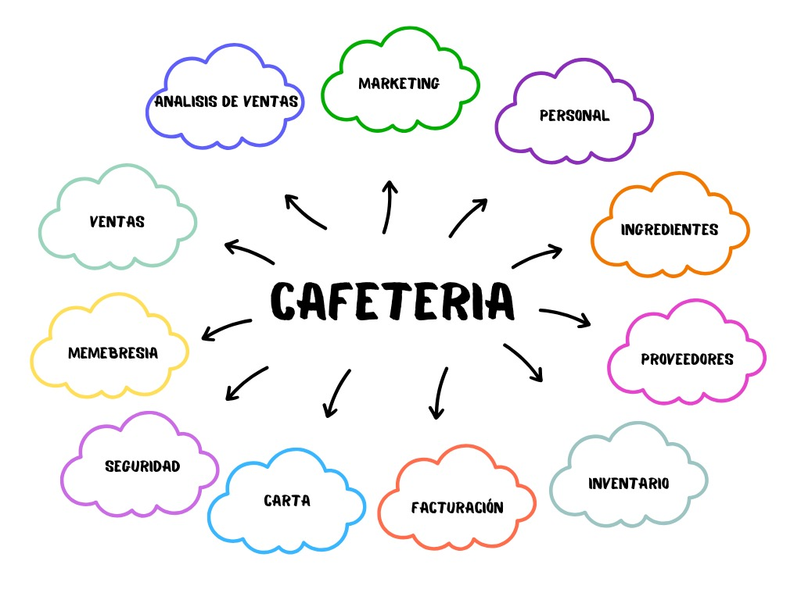

El Sistema de Gestión de Inventario (SGI) es un sistema propuesto para optimizar la administración de la cafetería Monky Café, diseñado para controlar de manera eficiente las áreas clave del negocio: Análisis de ventas, marketing, personal, ingredientes, proveedores, inventario, facturación, carta, seguridad, membresía, ventas.
Actualmente, la cafetería Monky Café enfrenta dificultades en el control de su inventario debido a que el registro de productos, ingredientes, ventas y compras se realiza de manera manual. Esta situación provoca errores en el manejo de existencias, falta de control sobre los ingredientes mínimos necesarios, demoras en la reposición de insumos y riesgos de pérdidas económicas. Ante esta problemática, surge la necesidad de desarrollar un sistema que optimice la gestión del inventario, permitiendo un control más preciso, ágil y confiable de las operaciones diarias.
Desarrollar un sistema de gestión de inventario para la cafetería Monky Café que permita optimizar el control de productos, ingredientes, ventas y compras, mediante el uso de una aplicación de software programada en C#, conectada a una base de datos en SQL Server e implementada en una arquitectura cliente-servidor.
En Monky Café, estos subsistemas permitirán gestionar de manera ordenada el análisis de ventas, marketing, personal, ingredientes, proveedores, inventario, facturación, carta, seguridad y membresía, garantizando que cada área funcione de forma eficiente sin perder la visión global del sistema.
